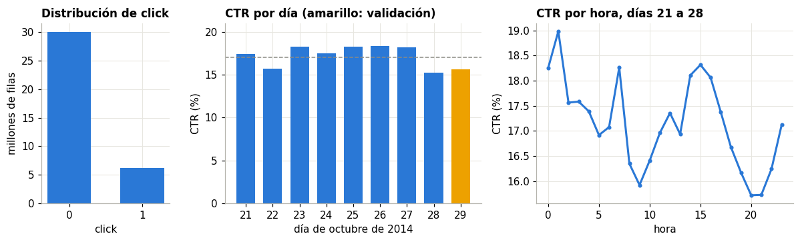
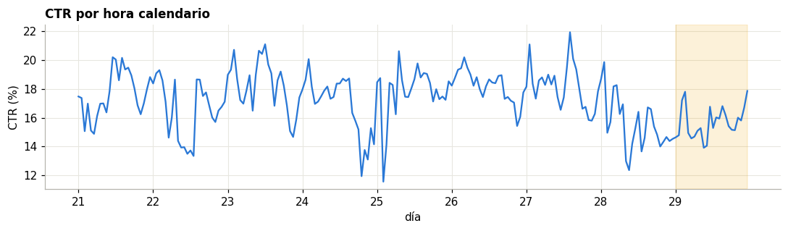
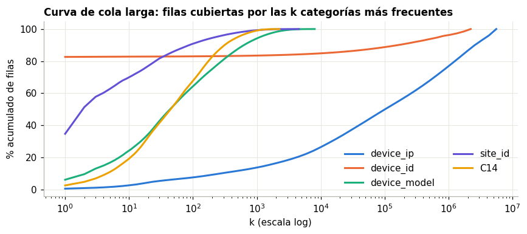
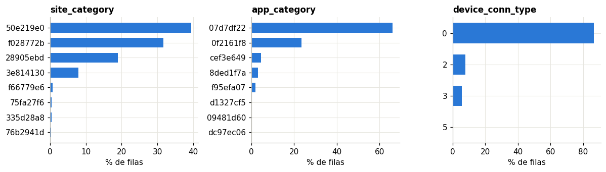
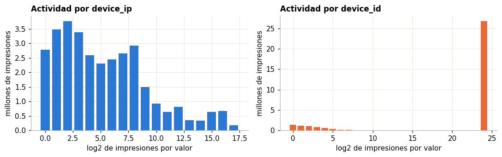
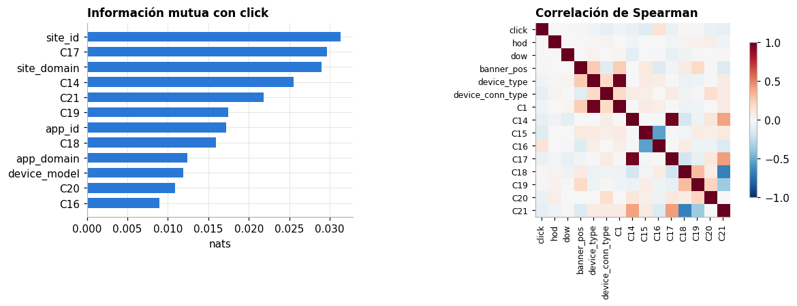
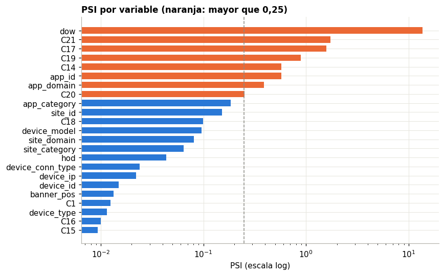

2. Análisis exploratorio#
El EDA se calcula en scripts/02_eda.py con lectura perezosa de Parquet particionado (DuckDB y
Polars), y este capítulo solo lee sus tablas. Las etiquetas del día 30 no se abren aquí: toda tabla
que use click cubre los días 21 a 29. La prueba solo entra en comparaciones sin etiqueta
(PSI y categorías no vistas).
import sys
sys.path.insert(0, "../src")
import numpy as np, pandas as pd, matplotlib.pyplot as plt, json
from ctr.plots import C, style, es, miles
from ctr.config import RES
style()
E = RES / "eda"
pd.set_option("display.max_columns", 30)
2.1 Carga eficiente, tipos y valores faltantes#
El CSV ocupa 6,3 GB y el Parquet con ZSTD 1,22 GB, una quinta parte. La tabla compara el mismo
agregado (tasa de clics por site_category) sobre los 40,4 millones de filas.
b = pd.read_json(RES / "bench" / "ingest.jsonl", lines=True).drop_duplicates(["step", "engine"], keep="last")
t = b[b.step.isin(["agg_csv", "agg_parquet"])].pivot(index="engine", columns="step", values="sec").round(2)
t.columns = ["CSV (s)", "Parquet (s)"]
t.loc["pandas (solo 32,4 M y 2 columnas)"] = [round(b[b.step == "agg_csv_2col_train"].sec.iloc[0], 2), np.nan]
t
| CSV (s) | Parquet (s) | |
|---|---|---|
| engine | ||
| duckdb | 5.12 | 0.10 |
| polars | 8.31 | 0.27 |
| spark | 22.68 | 6.51 |
| pandas (solo 32,4 M y 2 columnas) | 56.01 | NaN |
nul = pd.read_csv(E / "nulos.csv", index_col=0)
tipos = pd.read_csv(E / "tipos.csv")
print("Columnas:", len(tipos), "| nulos en total:", int(nul.nulos.sum()))
print(tipos.tipo.value_counts().to_string())
Columnas: 27 | nulos en total: 0
tipo
String 22
Int32 3
Float64 1
Int64 1
No hay nulos, pero tampoco tipos con significado: casi todo viene anonimizado, incluso los campos
C1 y C14 a C21. Por eso C14 a C21 se tratan como categóricas aunque parezcan números.
El valor -1 de C20 funciona como centinela de dato ausente y se conserva como una categoría más.
2.2 Tasa base por día, hora y franja#
dia = pd.read_csv(E / "ctr_dia.csv"); h = pd.read_csv(E / "ctr_hora.csv"); fr = pd.read_csv(E / "ctr_franja.csv")
ck = pd.read_csv(E / "click.csv").sort_values("click")
fig, ax = plt.subplots(1, 3, figsize=(11, 3.4), gridspec_kw=dict(width_ratios=[.6, 1.2, 1.2]))
ax[0].bar(["0", "1"], ck.n / 1e6, color=C["azul"], width=.6)
ax[0].set(title="Distribución de click", ylabel="millones de filas", xlabel="click")
ax[1].bar(dia.day.astype(str), dia.ctr * 100, color=[C["azul"]] * 8 + [C["amarillo"]], width=.7)
ax[1].axhline(np.average(dia.ctr, weights=dia.n) * 100, color=C["gris"], lw=1, ls="--")
ax[1].set(title="CTR por día (amarillo: validación)", ylabel="CTR (%)", xlabel="día de octubre de 2014", ylim=(0, 21))
ax[2].plot(h.hod, h.ctr * 100, color=C["azul"], marker="o", ms=3)
ax[2].set(title="CTR por hora, días 21 a 28", xlabel="hora", ylabel="CTR (%)")
plt.tight_layout(); plt.show()
print(f"Tasa base días 21 a 29: {es(ck[ck.click == 1].n.iloc[0] / ck.n.sum() * 100, 2)} %")
fr.assign(ctr=lambda d: d.ctr.round(4)).set_index("franja")

Tasa base días 21 a 29: 16,99 %
| n | ctr | |
|---|---|---|
| franja | ||
| madrugada | 6476200 | 0.1761 |
| manana | 9904430 | 0.1677 |
| noche | 5555868 | 0.1629 |
| tarde | 10440923 | 0.1767 |
La tasa cae cerca de dos puntos los días 22 y 28, y también el 29, justo antes de la prueba. El nivel de CTR cambia de un día a otro más que dentro del día. Esa es la razón para dividir por tiempo: una partición aleatoria mezclaría días y ocultaría esa variación.
dh = pd.read_csv(E / "ctr_dia_hora.csv").assign(t=lambda d: (d.day - 21) * 24 + d.hod)
fig, ax = plt.subplots(figsize=(10, 3))
ax.plot(dh.t, dh.ctr * 100, color=C["azul"], lw=1.5)
ax.set_xticks(range(0, 216, 24), range(21, 30))
ax.axvspan(192, 215, color=C["amarillo"], alpha=.15)
ax.set(title="CTR por hora calendario", xlabel="día", ylabel="CTR (%)"); plt.tight_layout(); plt.show()

2.3 Cardinalidad y cola larga#
c = pd.read_csv(E / "cardinalidad.csv").sort_values("categorias", ascending=False)
t = c.head(8)[["col", "categorias", "pct_cat_singleton", "pct_filas_singleton", "pct_filas_rara", "top1"]].copy()
t.columns = ["Variable", "Categorías", "% cat. vistas una vez", "% filas de esas cat.", "% filas raras (<10)", "% filas top 1"]
for k in t.columns[2:]:
t[k] = (t[k] * 100).round(1)
t.set_index("Variable")
| Categorías | % cat. vistas una vez | % filas de esas cat. | % filas raras (<10) | % filas top 1 | |
|---|---|---|---|---|---|
| Variable | |||||
| device_ip | 5566572 | 49.9 | 8.6 | 34.6 | 0.5 |
| device_id | 2217500 | 63.1 | 4.3 | 11.8 | 82.6 |
| app_id | 8095 | 19.9 | 0.0 | 0.0 | 65.3 |
| device_model | 8036 | 9.8 | 0.0 | 0.0 | 6.1 |
| site_domain | 7299 | 24.8 | 0.0 | 0.0 | 36.0 |
| site_id | 4551 | 11.5 | 0.0 | 0.0 | 34.7 |
| C14 | 2252 | 2.0 | 0.0 | 0.0 | 2.5 |
| app_domain | 539 | 25.0 | 0.0 | 0.0 | 68.8 |
cl = pd.read_csv(E / "cola_larga.csv")
fig, ax = plt.subplots(figsize=(8, 3.6))
for col, co in [("device_ip", C["azul"]), ("device_id", C["naranja"]), ("device_model", C["aqua"]), ("site_id", C["violeta"]), ("C14", C["amarillo"])]:
d = cl[cl.col == col]
ax.plot(d.n_cat, d.cum * 100, color=co, label=col)
ax.set_xscale("log"); ax.legend(ncol=2)
ax.set(title="Curva de cola larga: filas cubiertas por las k categorías más frecuentes", xlabel="k (escala log)", ylabel="% acumulado de filas")
plt.tight_layout(); plt.show()

device_ip y device_id concentran el problema: 5,6 y 2,2 millones de categorías. Una columna
one-hot por valor es inviable, como advierte el enunciado. device_id además engaña: su valor
más común cubre el 82,6 % de las filas y funciona como «sin identificador». El umbral de 10
apariciones manda a __RARE__ el 34,6 % de las filas en device_ip, pero casi ninguna en las demás.
tc = pd.read_csv(E / "top_categorias.csv")
fig, axs = plt.subplots(1, 3, figsize=(11, 3.2))
for a, col in zip(axs, ["site_category", "app_category", "device_conn_type"]):
d = tc[tc.col == col].head(8).iloc[::-1]
a.barh(d.v.astype(str).str[:8], d.share * 100, color=C["azul"], height=.65)
a.set(title=col, xlabel="% de filas")
plt.tight_layout(); plt.show()

fig, axs = plt.subplots(1, 2, figsize=(10, 3.2))
for a, col, co in zip(axs, ["device_ip", "device_id"], [C["azul"], C["naranja"]]):
d = pd.read_csv(E / f"hist_actividad_{col}.csv")
a.bar(d.b, d.impresiones / 1e6, color=co, width=.8)
a.set(title=f"Actividad por {col}", xlabel="log2 de impresiones por valor", ylabel="millones de impresiones")
plt.tight_layout(); plt.show()

Estos conteos son la numérica de cola pesada. Por eso entran al modelo con log1p y StandardScaler.
2.4 Asociación con click y correlación#
a = pd.read_csv(E / "asociacion.csv").head(12).iloc[::-1]
sp = pd.read_csv(E / "spearman.csv", index_col=0)
fig, ax = plt.subplots(1, 2, figsize=(11, 4.2), gridspec_kw=dict(width_ratios=[.8, 1.2]))
ax[0].barh(a.col, a.mi, color=C["azul"], height=.65)
ax[0].set(title="Información mutua con click", xlabel="nats")
im = ax[1].imshow(sp.values, vmin=-1, vmax=1, cmap="RdBu_r")
ax[1].set_xticks(range(len(sp)), sp.columns, rotation=90, fontsize=8); ax[1].set_yticks(range(len(sp)), sp.index, fontsize=8)
ax[1].grid(False); ax[1].set_title("Correlación de Spearman"); fig.colorbar(im, ax=ax[1], shrink=.8)
plt.tight_layout(); plt.show()
pd.read_csv(E / "asociacion.csv").head(6).round(4).set_index("col")

| mi | cramer_v | n | |
|---|---|---|---|
| col | |||
| site_id | 0.0313 | 0.2606 | 1617722 |
| C17 | 0.0297 | 0.2467 | 1617722 |
| site_domain | 0.0290 | 0.2497 | 1617722 |
| C14 | 0.0255 | 0.2292 | 1617722 |
| C21 | 0.0218 | 0.2026 | 1617722 |
| C19 | 0.0174 | 0.1770 | 1617722 |
La muestra para asociación es el 5 % del entrenamiento (1,6 millones), con las 100 categorías más
frecuentes de cada variable. Ninguna variable sola explica mucho: la mayor V de Cramér ronda 0,26. Los
campos anónimos C17, C14 y C21 compiten con site_id, y C14 a C17 guardan correlaciones
altas entre sí, posible señal de que describen el mismo anuncio.
2.5 Deriva: PSI entre entrenamiento y prueba#
El PSI usa solo la distribución de las variables, sin etiquetas: 20 categorías principales del
entrenamiento más otros. Como referencia usual, más de 0,25 ya es deriva importante.
p = pd.read_csv(E / "psi.csv").sort_values("psi")
fig, ax = plt.subplots(figsize=(8, 5))
ax.barh(p.col, p.psi, color=[C["naranja"] if x > .25 else C["azul"] for x in p.psi], height=.7)
ax.set_xscale("log"); ax.axvline(.25, color=C["gris"], ls="--", lw=1)
ax.set(title="PSI por variable (naranja: mayor que 0,25)", xlabel="PSI (escala log)")
plt.tight_layout(); plt.show()
nv = pd.read_csv(E / "no_vistas.csv"); nv = nv[nv.split == "test"].sort_values("pct_filas_no_vistas", ascending=False).head(6)
nv.assign(pct=lambda d: (d.pct_filas_no_vistas * 100).round(1))[["col", "pct"]].rename(columns={"pct": "% filas de prueba no vistas"}).set_index("col")

| % filas de prueba no vistas | |
|---|---|
| col | |
| device_ip | 44.6 |
| C14 | 36.0 |
| C17 | 33.6 |
| C21 | 19.3 |
| C19 | 10.4 |
| device_id | 10.3 |
dow tiene un PSI enorme por construcción: la prueba es un solo jueves, y el entrenamiento reparte
ocho días, así que este valor describe el diseño y no un cambio de comportamiento. Lo informativo es
otra cosa: C21, C17, C19 y C14 superan 0,5, y el 36 % de las filas de prueba trae un C14
que el entrenamiento nunca vio. C14 y C17 parecen identificar creatividades que rotan en el
tiempo. Una división aleatoria nunca dejaría ver esto.
Qué se llevan los siguientes capítulos:
La división temporal no es un formalismo: la deriva es grande.
Hay que tratar categorías no vistas, porque aparecen en más del 40 % de las filas para
device_ip.device_ip,device_id,C14yC17definen el costo de la codificación.